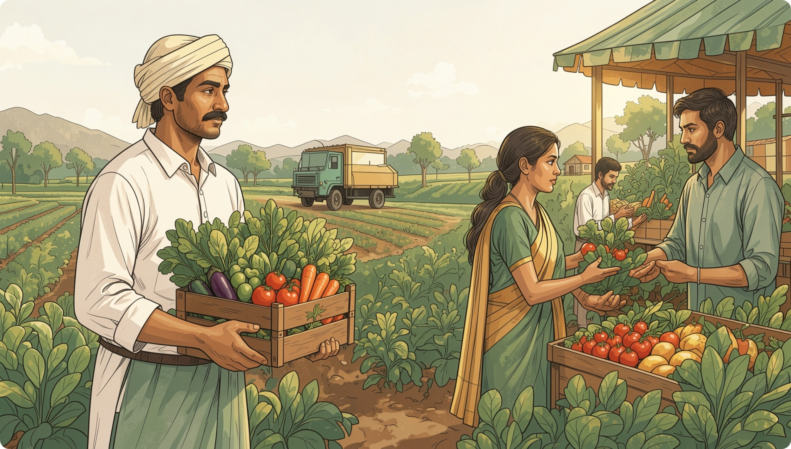
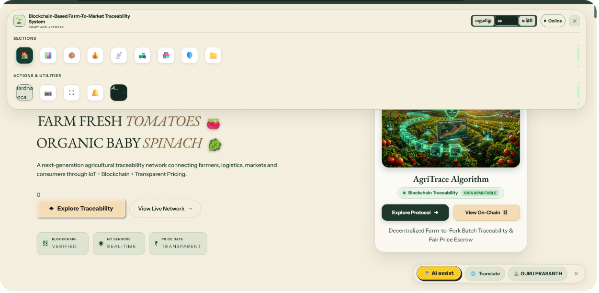

Farmer and Seller portals • email/password • Google authentication integration • role-based access
Crop name • images • quantity and unit • price and location • quality and availability
Browse • compare listings • submit requests or offers • connect with farmers
Track requests • manage status • coordinate interactions • record supported transaction details
Tamil Nadu datasets and official resources • tomato comparison across Salem, Madurai, Coimbatore, Erode
Produce Batch → Digital Record → Blockchain Transaction → QR Verification → Traceability Information
Eligible activities • completion rewards • configured daily eligibility • balance • transaction history
Simple navigation • responsive interface • readable text • language accessibility • voice assistance
AgriTrace transforms agricultural supply chains into a connected, transparent and verifiable digital ecosystem.